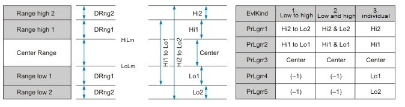
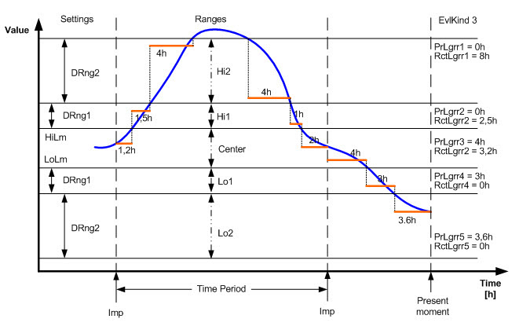

[LNGR_PRD] Lingering of a period
LNGR_PRD records the lingering period in hours during which a signal moves within freely definable limits (5 ranges).
Functioning
Enable and disable the function
The lingering period is determined (in hours) if the function is enabled (EnFnct and EnEvl = 1) and the analog input signal [In] is reliable (Vldty = 1). The analog value lingers between freely definable limit value ranges.
Calculation and evaluation
Evaluation kind [EvlKind] determines the method of calculation. [HiLm] and [LoLm] determine the addition or subtraction of the Delta ranges [DRng1] and [DRng2] for the limit value ranges. For enabled function and reliable input signal, the time for each evaluation kind (see illustration) is added up and displayed in hours at outputs [PrLgrrx] and [RctLgrrx]. The times are distributed accordingly for a changeover of [EvlKind].

PrLgrrX | Present Linger in Range X |
RctLgrrX | Recent Linger in Range X |

Evaluation Kind 1 (Low to high) | Evaluation Kind 2 (Low and high) | Evaluation Kind 3 (Individual) |
|---|---|---|
PrLgrr1 = 10,6h | PrLgrr1 = 3,6h | PrLgrr1 = 0h |
PrLgrr2 = 6,2h | PrLgrr2 = 3h | PrLgrr2 = 0h |
PrLgrr3 = 4h | PrLgrr3 = 4h | PrLgrr3 = 4h |
PrLgrr4 = -1h | PrLgrr4 = -1h | PrLgrr4 = 3h |
PrLgrr5 = -1h | PrLgrr5 = -1h | PrLgrr5 = 3,6h |
The deviation for the present time period is displayed on [PrLgrrx]. After the time period has expired, the present times are saved as times for the recent time period [RctLgrrx] and set to zero. The time period, generated outside of LNGR_PRD, is determined via a rising slope on the input [Imp]. If the input signal is invalid (Vldty = 0), the calculation stops. The recent valid values from the outputs are frozen until the signal is valid again.
Subperiods within time periods
Input [EnEvl] can be used to evaluate subperiods within the entire time period. When EnEvl = 0, the evaluation is disabled and the recent valid values are displayed at the outputs. At a pulse, the present times are saved as values from the last time period.
Reset
All present and recent values are set to zero via a rising slope on input [Reset].
Pins
Input | Description | Data type | Default value |
|---|---|---|---|
|
EnFnct | Enable function | Boolean | 1 |
0 - The function is disabled (All [PrLgrrx] and [RctLgrrx] = 0). | |||
|
EnEvl | Enable evaluation | Boolean | 1 |
0 - Evaluation is disabled and the valid values at the outputs are frozen. | |||
|
In | Input Input signal | Real | 0.0 |
|
Imp | Impulse Pulse input for which the evaluation time period is determined. The rising edge indicates start of new period. | Boolean | 0 |
0 - No | |||
|
Vldty | Validity The calculation of the linger period can only be calculated with a valid input signal. | Boolean | 1 |
0 - Input signal is not valid. | |||
|
EvlKind | Evaluation kind | Integer | 3: On 1...3 |
1: Unknown | |||
|
HiLm | High limit | Real | 23.0 |
|
LoLm | Low limit | Real | 21.0 |
|
DRng1 | Delta range 1 | Real | 2.0 |
|
DRng2 | Delta range 2 | Real | 4.0 |
|
Reset | Reset All times are reset to zero. | Boolean | 0 |
0 - No | |||
|
Pers | Persistent | Boolean | 0 |
0 - No | |||
|
TshVal | Threshold value | Real | 0.1 |
|
BaObjRef | BA-Object reference | Structure | --- |
BaObjRef | Device identifier | Double Word | 16#3FFFFF |
BaObjRef | Object identifier | Double Word | 16#3FFFFF |
BaObjRef | Item identifier | Integer | -1 |
Output | Description | Data type | Default value |
|---|---|---|---|
|
PrLgrr1 | Present linger in range 1 | Real | 0.0 |
|
RctLgrr1 | Recent linger in range 1 | Real | 0.0 |
|
PrLgrr2 | Present linger in range 2 | Real | 0.0 |
|
RctLgrr2 | Recent linger in range 2 | Real | 0.0 |
|
PrLgrr3 | Present linger in range 3 | Real | 0.0 |
|
RctLgrr3 | Recent linger in range 3 | Real | 0.0 |
|
PrLgrr4 | Present linger in range 4 | Real | 0.0 |
|
RctLgrr4 | Recent linger in range 4 | Real | 0.0 |
|
PrLgrr5 | Present linger in range 5 | Real | 0.0 |
|
RctLgrr5 | Recent linger in range 5 | Real | 0.0 |
|
Dstb | Disturbed [Dstb] indicates whether the referenced BACnet object was accessed. | Boolean | 0 |
|
ErrCode | Error code indication | Integer | 0: No error |
= 0 - No error | |||
Application
LNGR_PRD is used to calculate the linger period (hours) for an analog input value in a freely definable range within a time period. By recognizing setpoint deviations and determining how long a value lingers within the freely definable limit value range for a specified time period, errors, such as wrong control parameters, setpoint violations or manual interventions, can be identified earlier.
The following example is based on an evaluation period = 1 day: